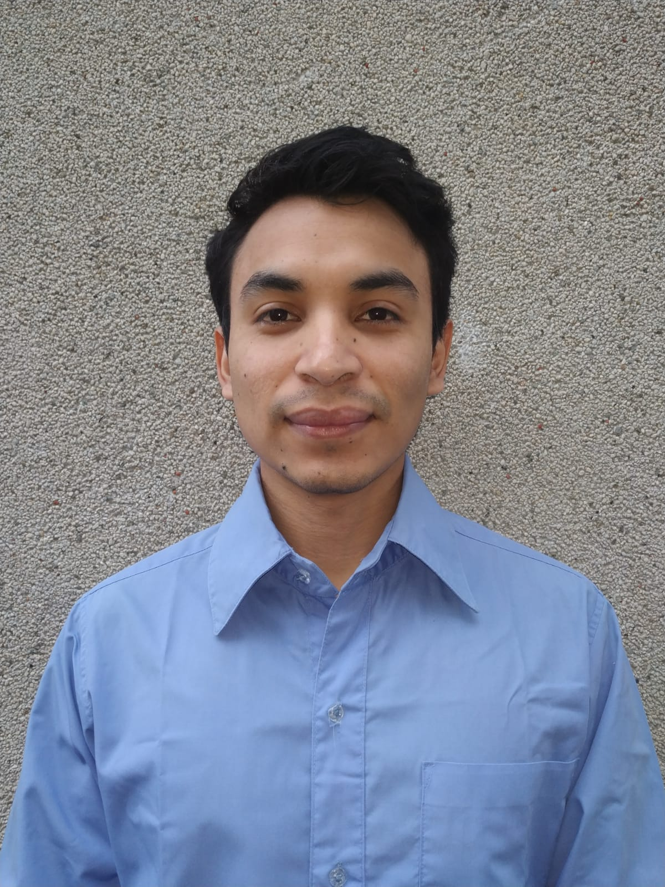

Artículo 4 Portal para la transmisión del canal TEVE Humanidades en vivo de forma simultánea

Autor: Braian Staimer Florián Montenegro
Correo electrónico: braianflorian@gmail.com
Fecha: 20 de octubre de 2019
Resumen
La Facultad de Humanidades de la Universidad de San Carlos de Guatemala busca que el público general pueda recibir la transmisión para ver videos en vivo y en diferido del contenido del canal TEVE Humanidades. El proceso anterior estaba limitado a transmitir en una única plataforma desde una misma señal de video. No se tenía una plataforma propia que cumpliera con los lineamientos para la transmisión en cable nacional y mundial. El proyecto cumplió con las expectativas de quienes lo propusieron, desarrollaron e implementaron.
Abstract
The Faculty of Humanities of the Universidad de San Carlos de Guatemala seeks that the general public can receive the transmission to watch live and deferred videos of the content of the TEVE Humanidades channel. The previous process was limited to transmitting on a single platform from the same video signal. There was no platform of its own that met the guidelines for cable transmission nationwide and worldwide. The project met the expectations of those who proposed the project and those who developed and implemented it.
Palabras Clave:
EPS, plataformas de transmisión de video, servidor de video.
4.1 Introducción
La Facultad de Humanidades de la Universidad de San Carlos de Guatemala cuenta con el canal de TEVE Humanidades, creada para transmitir eventos relacionados con la facultad; tal es el caso de la graduación de sus estudiantes, celebración de eventos culturales, entre otros más. TEVE Humanidades no tenía una plataforma para la transmisión de video en vivo; por lo que hacían uso de servicios de terceros. No se podía transmitir en más de una plataforma al mismo tiempo desde una misma señal de video; no existían lineamientos tecnológicos para la trasmisión en cable nacional y mundial. Debido a lo anterior, surgió la necesidad de desarrollar un portal web y configurar un servidor de transmisión de video en vivo para el canal de TEVE Humanidades que transmita video en vivo desde una misma señal, hacia múltiples plataformas, incluyendo el portal antes mencionado.
4.2 Artículo
4.2.1 El problema
Antes de la implementación del proyecto TEVE Humanidades, con sede en la Facultad de Humanidades de la Universidad de San Carlos de Guatemala, no se contaba con una plataforma para la transmisión de video en vivo; por lo que hacían uso de servicios de terceros. Únicamente se podía transmitir en una plataforma al mismo tiempo desde una señal de video; no se tenía un sistema de almacenamiento de videos que permitiera al público general sintonizar los videos en diferido, tampoco existían lineamientos tecnológicos para la trasmisión en cable nacional y mundial.
4.2.2 El flujo de transmisión de video en vivo es el siguiente:
- El equipo de grabación realiza los preparativos para ejecutar la grabación de video y transmisión en vivo.
- El equipo de grabación verifica que todo esté funcionando correctamente.
- Una vez el entorno de grabación esté listo, un operador de cámara realiza la captura de video del evento que se desee transmitir en vivo; la señal de video proveniente de las cámaras es convertida de HDMI a SDI, por medio de un dispositivo externo, con el objetivo de permitir la compatibilidad entre dispositivos; luego la señal es recibida por el mezclador por medio de las entradas SDI, las cuales permiten resincronizar las señales y convertir el formato para adaptarlo al del mezclador.
Un director de cámara selecciona la vista de cámara que mejor convenga en cada momento para la transmisión de video; la señal elegida es enviada a una plataforma portátil de grabación.
De acuerdo con el evento que se esté transmitiendo, un operador puede grabarlo en tarjetas SD, para su posterior utilización.
- Un operador ingresa a la plataforma de terceros, en donde se realizará la transmisión, y obtiene una dirección hacían donde se hará la emisión de video.
- Otro operador hace uso de un programa para la emisión de video por medio del enlace obtenido.
- Un operador realiza las configuraciones necesarias en un programa para la emisión de video; actualmente se utiliza el programa OBS.
- Un operador inicia la transmisión de video en vivo a través de la plataforma establecida.
4.2.3 Solución planteada
Con base en las necesidades planteadas se establecieron los siguientes objetivos para el proyecto:
- Desarrollar un gestor de videos para que el público general lo pueda ver en diferido a través del portal.
- Establecer los lineamientos tecnológicos necesarios para transmitir en cable nacional.
- Programar un servidor para transmitir video en vivo.
4.2.4 Desarrollo e implementación del proyecto
Se desarrolló un portal web dinámico donde el público general puede recibir la transmisión para ver videos en vivo y en diferido. Se realizó la interface donde el administrador decida a qué otras plataformas, se transmitirá de forma simultánea. Se provee un gestor de videos para almacenamiento de archivos en formato de video de forma manual o automática. Además, permite agregar publicaciones multimedia en una sección específica. Se desarrolló un servidor para transmitir video en vivo, que lanza la señal de video a diferentes plataformas, tanto propias como de terceros. Se cuenta con un módulo de almacenamiento de videos, con opción de guardar el video que se esté transmitiendo, o contenido subido de forma manual. Así también, un módulo de codificación de video que permite la retransmisión de la señal de video en diferentes calidades. Además, se definieron los lineamientos necesarios para la transmisión en cable nacional.
4.2.5 Proyecto implementado
Una vez implementado el proyecto, el flujo del proceso cambió de la siguiente manera:
Figura 4.1: Vista física de la aplicación. Fuente: Elaboración propia
4.2.6 El flujo que se muestra en la figura se describe a continuación:
• El equipo de grabación realiza los preparativos para efectuar la grabación de video y transmisión en vivo. Una vez el entorno de grabación esté listo, un operador de cámara realiza la captura de video del evento que se desee transmitir en vivo.
• Un operador realiza las configuraciones necesarias en un programa para la emisión de video; actualmente se utiliza el programa OBS. Un operador inicia la transmisión de video en vivo a través de la plataforma establecida.
• El servidor de transmisión codifica la señal de video entrante y la transmite hacia las diferentes plataformas previamente configuradas.
• La interface entre el portal web y el servidor de transmisión de video permite por medio del protocolo de intercambio y manipulación de datos REST, configurar los parámetros para la transmisión de video en vivo.
• Se hace uso de una base de datos relacional para almacenar la información utilizada en el portal web y en el servidor de transmisión de video en vivo.
• El público general, a través del portal web, puede sintonizar la transmisión de video en vivo, videos en diferido y publicaciones de multimedios.
4.2.7 Lineamientos tecnológicos necesarios para transmitir en cable nacional
Llevar la señal de TEVE HUMANIDADES a la empresa de cable sería por demás interesante, porque su alcance aumentaría exponencialmente a 2 millones de personas en todo el país, aproximadamente. Sin embargo, hay condiciones que las empresas de cable establecen para agregar a su guía de programación un canal de televisión nuevo; entre ellas pueden citarse:
• Una señal nítida, la cual se puede generar en TEVE HUMANIDADES, con la compra de un ancho de banda de internet de 8 megas, con servicio dedicado.
• Una programación interesante, amena y profesional. Para lo cual se necesitan dos productores y dos presentadores en TEVE HUMANIDADES.
• Una programación continua. Solo se logrará con el personal mínimo necesario arriba indicado, y con la colaboración de pedagogos y productores de la Facultad de Humanidades.
4.3 Conclusiones
• Se desarrolló un gestor de videos que permite que el público general, a través del portal web, pueda sintonizar la transmisión de video en vivo, videos en diferido y publicaciones de multimedios.
• Se crearon los lineamientos tecnológicos necesarios para transmitir en cable nacional.
• Se programó un servidor para transmitir video en vivo hacia múltiples plataformas.
4.4 Recomendaciones
• Realizar auditorías periódicas al sistema para buscar y corregir posibles vulnerabilidades de seguridad.
• Revisar periódicamente si hay cambios en los estándares para transmitir en cable nacional.
• Capacitar al personal para el uso correcto del sistema, con el fin de evitar errores en la configuración del mismo. De la misma manera, llevar un control estadístico de consumo de recursos, para pronosticar cuándo el sistema se verá afectado por falta de recursos debido al crecimiento del mismo.
4.5 Referencias
- [1] Facultad de Humanidades, USAC. USAC: Facultad de Humanidades, USAC. Recuperado de: http://humanidades.usac.edu.gt/portal/. [Último acceso: octubre 2016].